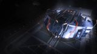

Макс. скорость / с форсажем
132 / 202 м/с
Одна из лучших барж для лазерной добычи благодаря одному только объёму. Просторные отсеки вмещают целый флот дронов, крупнейший перерабатывающий завод и сотни тонн руды: одна сессия заменяет четыре рейса среднего корабля. Слабые щиты и низкая скорость делают его лёгкой добычей для пиратов. Лучше всего он работает в безопасных кольцах, в одиночном режиме или под охраной крыла.

Оценка пригодности корабля от 1 до 100 учитывает его полностью улучшенную сборку и сравнивает её с другими кораблями в этой роли. Подробнее: как оцениваются корабли.
Type-9 Heavy — грузовик Lakon для больших партий. Добыча тоже требует возить большой объём, поэтому он так хорош в этой роли. Одиннадцать дополнительных отсеков, в том числе два класса 8, вмещают крупнейший перерабатывающий завод и несколько контроллеров дронов для сбора и разведки и всё равно оставляют место под сотни тонн руды.
Расплата — живучесть. У Type-9 слабые щиты и поворотливость луны: от решительного пирата не уйти и не отбиться. Выбирайте кольцо внимательно: добывайте в одиночном режиме или частной группе, ищите безопасные системы либо берите напарника для охраны. При правильных условиях это самая продуктивная лазерная добыча в игре.
Массовая лазерная и поверхностная добыча в безопасных кольцах: пейнит, платина, низкотемпературные алмазы и тритий сотнями тонн за сессию, лучше в одиночном режиме или под охраной.
Четыре причины, почему Type-9 силён в добыче:
Корабль Imperial Cutter вмещает ещё больше и переживает нападения пиратов благодаря мощным щитам, а Type-11 Prospector создан специально для добычи: у него выделенные гнёзда, выше скорость и крепче щиты. Type-9 слаб и медлителен: он чемпион по объёму лишь в безопасном месте. В опасном кольце это лёгкая добыча.
Главное преимущество — доступная вместимость: около 512 т и больше в добывающей сборке (максимум около 790 т), уступает только Cutter. Слабые места — штатные щиты около 110 МДж и скорость всего 132/202 м/с.
Корабль 90/100 — итог по критериям, важным для добычи. У каждого критерия есть вес (его доля из 100). Баллы по нему зависят от того, как корабль показал себя на фоне остальных. Сумма баллов даёт итоговую оценку.
| Критерий | Баллы | Почему столько |
|---|---|---|
| Полезная вместимость руды | 35/35 | Около 512 т и больше в добывающей сборке и около 790 т предельного груза. Больше только у Imperial Cutter (около 794 т), для которого нужен ранг. Два дополнительных отсека класса 8 и отсеки 7/6 дают ему самую длинную лазерную сессию после Cutter. |
| Инструменты и отсеки | 24/25 | Одиннадцать дополнительных отсеков (8·8·7·6·5·4·4·3·3·2·1) вмещают завод в отсеке класса 8, несколько контроллеров сборщиков и разведчиков и двухпоточный щит. Три средних и два малых гнезда принимают два лазера и полный набор для ядра и поверхности, а четыре вспомогательных — импульсный сканер и усилители. Ограничение — средний размер гнёзд по сравнению со специализированным кораблём. |
| Живучесть | 7/15 | Штатный щит около 110 МДж при массе 850 т, 864 брони и скорости 132/202 м/с. От пиратского перехвата не уйти и не отбиться. Даже с доработками (двухпоточный щит и два усилителя на прочность, около 520 МДж) в опасном кольце он остаётся лёгкой добычей. Худший критерий. |
| Площадка и доступность | 14/15 | Большая площадка, без требований к рангу или разрешению. Единственная преграда — нельзя сесть на средней площадке или на аванпосте. |
| Цена и специализация | 10/10 | Корабль около 72 млн кр., сборка класса A около 95 млн, ранг и разрешение не нужны. Самый дешёвый путь к 500 т и более, боевые доработки для добычи не нужны. Баржа мало на что ещё годится, но полный трюм пейнита или платины (20–40 млн кр.) окупает её за две-три сессии. |
| Взвешенный итог | 90/100 | Эта сумма совпадает с общей оценкой корабля в этой роли. |
Вес критерия отражает приоритеты авторов гайда, а не формулу игры. Длина полосы показывает, какую долю от максимума корабль набрал по этому критерию. Подробнее: как оцениваются корабли.
Таблицы сравнивают корабли именно для добычии разделяют их по размеру посадочной площадки. Столбец Макс. груз показывает максимальный тоннаж трюма для руды. Итоговая оценка пригодности идёт по шкале от 1 до 100, как и на остальных страницах.
| Корабль | Класс | Макс. груз | Плюсы и минусы | Оценка |
|---|---|---|---|---|
| Imperial Cutter | Большая | ~794 т | Выше оценка; инструменты; живучестьДоступность площадок | 92 |
| Type-9 Heavy этот | Большая | ~790 т | — отправная точка для сравнения | 90 |
| Anaconda | Большая | ~470 т | Инструменты; живучестьНиже оценка; доступ к площадкам | 86 |
| Type-7 Transporter | Большая | ~310 т | Цена; инструменты и отсекиНиже оценка; живучесть | 78 |
| Panther Clipper Mk II | Большая | ~662 т | Трюм для руды; инструменты и отсекиНиже оценка; цена | 77 |
| Imperial Clipper | Большая | ~250 т | Цена; живучестьНиже оценка; доступ к площадкам | 70 |
| Type-10 Defender | Большая | ~534 т | Живучесть; инструментыНиже оценка; цена | 70 |
| Federal Corvette | Большая | ~618 т | Живучесть; трюм для рудыНиже оценка; цена | 64 |
| Caspian Explorer | Большая | ~434 т | Инструменты; живучестьНиже оценка; цена | 60 |
Из девяти оценённых кораблей для большой площадки лидирует Imperial Cutter (92). Все соперники здесь требуют площадки того же класса. С них стоит начинать сравнение перед покупкой.
| Корабль | Класс | Макс. груз | Плюсы и минусы | Оценка |
|---|---|---|---|---|
| Type-11 Prospector | Средняя | ~288 т | Выше оценка; инструменты; доступность площадокЦена | 95 |
| Python | Средняя | ~294 т | Инструменты; живучестьТрюм для руды | 90 |
| Krait Mk II | Средняя | ~230 т | Живучесть; доступность площадокНиже оценка; трюм для руды | 84 |
| Type-8 Transporter | Средняя | ~406 т | Трюм для руды; инструменты и отсекиНиже оценка; живучесть | 84 |
| Krait Phantom | Средняя | ~190 т | Доступность площадок; инструментыНиже оценка; живучесть | 70 |
| Corsair | Средняя | ~318 т | Живучесть; доступность площадокНиже оценка; цена | 68 |
| Keelback | Средняя | ~98 т | Живучесть; доступность площадокНиже оценка; трюм для руды | 68 |
| Asp Explorer | Средняя | ~130 т | Инструменты; доступность площадокНиже оценка; живучесть | 64 |
| Type-6 Transporter | Средняя | ~114 т | Цена; доступность площадокНиже оценка; живучесть | 62 |
Из девяти оценённых кораблей для средней площадки лидирует Type-11 Prospector (95). Исходное сравнение называет их более дешёвыми, уступающими по характеристикам и рассчитанными на более тесные площадки; таблица относит их к другому классу.
| Корабль | Класс | Макс. груз | Плюсы и минусы | Оценка |
|---|---|---|---|---|
| Cobra Mk V | Малая | ~110 т | Доступность площадок; инструментыНиже оценка; трюм для руды | 58 |
| Cobra Mk III | Малая | ~64 т | Доступность площадок; ценаНиже оценка; живучесть | 52 |
| Adder | Малая | ~30 т | Доступность площадок; ценаНиже оценка; живучесть | 48 |
Из трёх оценённых кораблей для малой площадки лидирует Cobra Mk V (58). Они дешевле и садятся на меньшие площадки, но уступают по характеристикам и относятся к другому классу.
Корабль стоит около 72 млн кр., без требований к рангу и разрешению. Это самый дешёвый путь к действительно огромному трюму. Дорогие боевые доработки не нужны: основные расходы — корабль, дроны и перерабатывающий завод, а не оружие.
Полный трюм дорогой руды может стоить десятки миллионов, поэтому Type-9 окупается за несколько удачных сессий. Готовая сборка Jumpstart за ARX, описанная ниже, позволяет начать ещё быстрее.
Полный трюм пейнита или платины на хорошем рынке стоит 20–40 млн кр. Две-три безопасные сессии покрывают цену корабля, дальше начинается прибыль.
Lakon предлагает готовый Type-9 за ARX. Возможно, у вас уже есть этот корабль из торгового набора Jumpstart. Штатные модули продаются за 0 кр., их нельзя складировать или переносить. Доработка штатных основных модулей на месте сохраняет бесплатный выкуп.
Чтобы переделать торговый Type-9 Jumpstart под добычу, поставьте добывающие инструменты, контроллеры дронов и завод в свободные отсеки, не снимайте штатные модули и меняйте грузовые стеллажи по мере необходимости.
| Набор | Type-9 Heavy (готовый корабль Jumpstart за ARX) |
|---|---|
| В комплекте | Оснащённый корабль, внешний комплект, окраска |
Если Type-9 из торгового Jumpstart, ставьте добывающее оснащение в пустые отсеки и дорабатывайте штатные основные модули на месте. Не продавайте их: за них дают 0 кр., а бесплатный выкуп сохраняется, пока они на месте.
Вместительная баржа для лазерной добычи с набором для ядер и поверхности. Начальная сборка только покупная, класс A — рабочая основа, инженерная усиливает то, что важно для баржи: маневровых двигателей и рамочно-сместительный двигатель для перелётов, щиты для выживания и дальность за счёт управления массой. Сами добывающие инструменты не дорабатываются.
| Отсек | Начальная · только покупка | Класс A · без улучшений | С инженерными улучшениями | Примечания |
|---|---|---|---|---|
| Оружейные крепления | ||||
| Среднее крепление 1 | 2D Добывающий лазер (неподвижный) | 2D Добывающий лазер (неподвижный) | (нет чертежа улучшения) | Основной добывающий лазер длительным лучом отделяет фрагменты от астероида, чтобы дроны их собрали. |
| Среднее крепление 2 | 2D Добывающий лазер (неподвижный) | 2D Добывающий лазер (неподвижный) | (нет чертежа улучшения) | Второй добывающий лазер удваивает скорость резки; Добывающие лазеры не имеют инженерных чертежей и остаются штатными. |
| Среднее гнездо 3 | — | 2B Пусковая установка сейсмозарядов (неподвижный) | (нет чертежа улучшения) | Пусковая установка сейсмозарядов раскалывает богатые ядра. Это инструмент класса 2, поэтому нужно среднее гнездо. |
| Малое крепление 1 | — | 1D Абразивный бластер (неподвижный) | (нет чертежа улучшения) | Абразивный бластер сбивает поверхностные залежи. Это инструмент класса 1, он помещается в малое гнездо. |
| Малое крепление 2 | — | 1B Ракетная установка подповерхностного смещения (неподвижный) | (нет чертежа улучшения) | Ракета для подповерхностных залежей извлекает руду из-под поверхности. Малая версия освобождает средние гнёзда под лазеры. |
| Внешние крепления | ||||
| Крепление 1 | 0A Импульсно-волновой анализатор | 0A Импульсно-волновой анализатор | (нет чертежа улучшения) | Импульсный сканер подсвечивает астероиды с ядрами и поверхностными залежами в кольце. Не дорабатывается. |
| Крепление 2 | — | 0A Усилитель щита | G5 Усиленная конструкция + Суперконденсаторы | Усиленный усилитель щита повышает запас МДж двухпоточного щита при перехвате пиратами. |
| Крепление 3 | — | 0I Теплоотводная катапульта | G1 Дополнительный боезапас (без экспериментального эффекта) | Необязательно. Дополнительный боезапас даёт больше теплоотводов. Они снимают нагрев при скрытном ходе и помогают сбросить температуру. |
| Крепление 4 | — | 0A Усилитель щита | G5 Усиленная конструкция + Суперконденсаторы | Второй усилитель на прочность — самый дешёвый способ заметно поднять защиту хрупкой баржи. |
| Основные модули | ||||
| Обшивка | Лёгкий сплав | Лёгкий сплав | Облегчение 5-й ступени (без экспериментального эффекта) | |
| Энергетическая установка | 6E Энергетическая установка | 6A Энергетическая установка | G5 Низкие выбросы + Рассеивание тепла | Класс A тянет нагрузку от флота дронов. «Низкие выбросы» снижают нагрев и заметность, «Рассеивание тепла» отводит остаток. |
| Маневровые двигатели | 7E Маневровые двигатели | 7A Маневровые двигатели | G5 Грязная настройка двигателей + Форсированные двигатели | Класс A с улучшением «Грязная настройка» возвращают 850-тонной барже хотя бы немного манёвренности в кольце. |
| Рамочно-сместительный двигатель (FSD) | 6E Рамочно-сместительный двигатель (FSD) | 6A Рамочно-сместительный двигатель (FSD) | G5 Увеличенная дальность + Управление массой | Класс A с доработкой Увеличенная дальность и «Управлением массой» доставит полный трюм на рынок за меньшее число прыжков. |
| Система жизнеобеспечения | 5E Система жизнеобеспечения | 5D Система жизнеобеспечения | G5 Облегчение (без экспериментального эффекта) | Класс D уменьшает массу, а Облегчение снижает её ещё сильнее. У системы жизнеобеспечения нет экспериментального эффекта. |
| Распределитель энергии | 6E Распределитель энергии | 6A Распределитель энергии | G3 Усиленная зарядка + Сверхпроводящие каналы | Класс A, чтобы лазеры и дроны не испытывали нехватку энергии. Для добычи хватает «Усиленной зарядки» уровня 3. |
| Сенсоры | 4E Сенсоры | 4D Сенсоры | G5 Облегчение (без экспериментального эффекта) | Поставьте класс D и облегчите: большая дальность сенсоров для добычи не нужна, а масса уменьшится. |
| Топливный бак | 6C Топливный бак | 6C Топливный бак | (нет чертежа улучшения) | Штатный бак класса C. Вместимость фиксирована и не меняется инженерными улучшениями. |
| Дополнительные отсеки | ||||
| Размер 8 | 8E Грузовой стеллаж | 8E Грузовой стеллаж | (нет чертежа улучшения) | Необязательно. Дополнительное место для груза полезно, если регулярно его возишь. Грузовые стеллажи не улучшаются у инженеров. |
| Размер 8 | 8E Грузовой стеллаж | 8E Грузовой стеллаж | (нет чертежа улучшения) | Необязательно. Дополнительное место для груза полезно, если регулярно его возишь. Грузовые стеллажи не улучшаются у инженеров. |
| Размер 7 | — | 7E Грузовой стеллаж | (нет чертежа улучшения) | Необязательно. Дополнительное место для груза полезно, если регулярно его возишь. Грузовые стеллажи не улучшаются у инженеров. |
| Размер 6 | — | 6E Грузовой стеллаж | (нет чертежа улучшения) | Необязательно. Дополнительное место для груза полезно, если регулярно его возишь. Грузовые стеллажи не улучшаются у инженеров. |
| Размер 5 | 5E Контроллер дронов-сборщиков | 5A Контроллер дронов-сборщиков | G5 Облегчение (без экспериментального эффекта) | Необязательно. «Облегчение» снижает массу контроллера. Модуль запускает дронов-сборщиков. |
| Размер 4 | — | 3A Контроллер дронов-сборщиков | G5 Облегчение (без экспериментального эффекта) | Необязательно. «Облегчение» снижает массу контроллера. Модуль запускает дронов-сборщиков. |
| Размер 4 | — | 4C Генератор двухконтурного щита | G5 Укреплённый + Быстрая зарядка | Двухпоточный щит быстро восстанавливается под огнём. «Усиленный» повышает запас МДж, «Быстрая зарядка» помогает восстановиться между попаданиями. |
| Размер 3 | 3E Контроллер разведывательных дронов | 3A Контроллер разведывательных дронов | G5 Облегчение (без экспериментального эффекта) | Необязательно. «Облегчение» снижает массу контроллера. Модуль запускает разведывательных дронов. |
| Размер 3 | 1E Переработчик | 3A Переработчик | G5 Защищённый (без экспериментального эффекта) | Необязательно. «Защищённый» повышает прочность переработчика. Модуль перерабатывает добытые обломки. |
| Размер 2 | — | 1I Подробный сканер поверхности | G5 Увеличенный радиус сканирования зондов (без экспериментального эффекта) | Необязательно. Улучшение увеличивает площадь, которую покрывает каждый зонд при составлении карты планеты. |
| Размер 1 | — | 1A Контроллер дронов-сборщиков | G5 Облегчение (без экспериментального эффекта) | Необязательно. «Облегчение» снижает массу контроллера. Модуль запускает дронов-сборщиков. |
| Планировщики и экспорт | ||||
| Открыть в Coriolis | открыть | открыть | открыть | Открывает сборку на coriolis.io. |
| Открыть в EDSY | открыть | открыть | открыть | Открывает сборку на edsy.org. |
| Скопировать SLEF | Копирует выбранную сборку в формате экспорта оснащения корабля (SLEF). | |||
Поставьте несколько контроллеров сборщиков, каждый запускает несколько дронов, чтобы руда поступала, пока вы режете. Один-два контроллера разведчиков повышают выход с астероида. Отсеки класса 8 оставьте только под груз.
Купите или переоборудуйте корабль и поставьте два добывающих лазеры, перерабатывающий завод, по контроллеру разведчика и сборщика и как можно больше грузовых стеллажей.
Поставьте импульсный сканер во вспомогательное гнездо, чтобы сразу видеть подходящие астероиды.
Оставьте штатную Лёгкий сплав броню: баржа выживает за счёт ухода, а не защиты корпуса. Не переплачивайте массой за военную броню.
Добывайте пейнит или платину в известной горячей точке в одиночном режиме до заполнения трюма и продавайте. Даже простая сборка приносит много денег.
Приоритет класса A для баржи — перелёты и выживание: класс добывающих инструментов не повысить.
Обшивка оставьте Лёгкий сплав: военная броня добавляет массу и всё равно не выдержит атаки пиратского крыла. Оставьте запас под груз и дальность: выживание зависит от щита, а не корпуса.
Штатные щиты Type-9 опасно слабы. Двухпоточный генератор и пара усилителей не сделают из него бойца, но дадут несколько секунд, нужных для прыжка в другую систему.
В добыче инженеры нужны для перелётов, дальности и защиты, а не оружия. Добывающие инструменты не дорабатываются. Закрепите чертежи основных модулей, чтобы применять уровни 1–5 удалённо.
| Модуль | Чертёж | Экспериментальный эффект | Инженер |
|---|---|---|---|
| Маневровые двигатели (7) | Грязная настройка двигателей (G5) | Форсированные двигатели | Professor Palin / Mel Brandon |
| Рамочно-сместительный двигатель (FSD) (6) | Увеличенная дальность (G5) | Управление массой | Felicity Farseer |
| Энергетическая установка (6) | Низкие выбросы (G5) | Рассеивание тепла | Hera Tani |
| Распределитель энергии (6) | Усиленная зарядка (G3) | Сверхпроводящие каналы | The Dweller |
| Двухконтурный щит (4) | Укреплённый (G5) | Быстрая зарядка | Lei Cheung |
| Усилители щита | Усиленная конструкция (G5) | Суперконденсаторы | Didi Vatermann |
| Обшивка | Облегчение (ступень 5) | — | Selene Jean |
Умеренный: только основные модули и щиты, без сбора материалов на оружие. Двигатели и рамочно-сдвиговый двигатель уровня 5 самые затратные; остальное проще. При полном запасе материалов собирать ничего не придётся. При необходимости уточните расход по каждому чертежу.
Ориентировочные показатели для трёх сборок. Точный результат зависит от оснащения:
| Показатель | Начальная | Класс A | С инженерными улучшениями |
|---|---|---|---|
| Макс. скорость с форсажем | 202 м/с | 202 м/с | ~250 м/с |
| Дальность прыжка с грузом | ~12 св. лет | ~18 св. лет | ~28 св. лет |
| Щит (МДж) | ~110 | ~280 | ~520 |
| Броня корпуса | 864 | 864 | ~864 |
| Груз (добывающая сборка) | ~256 т | ~448 т | ~512 т и выше |
| Живучесть | очень низкий | низкая–умеренная | умеренный |
Инженеры не сделают Type-9 поворотливым, но примерно учетверят щиты, увеличат дальность до рынка и поднимут вместимость выше 500 т. Облегчение снижает массу брони и сохраняет штатную защиту: это даёт дальность и груз вместо брони, которая всё равно не спасёт баржу. Хрупкий грузовик становится продуктивным и более живучим добывающим кораблём.
Подойдёт любая планета с кольцом и горячей точкой. Самое дорогое сырьё встречается в металлических и ледяных кольцах. Добывайте в одиночном режиме или частной группе рядом со станцией, покупающей вашу руду, лучше в паре прыжков.
Type-9 Heavy — чемпион лазерной добычи по объёму: крупнейший доступный трюм, место для полноценного флота дронов и большого завода, ранг не нужен. Главный недостаток — хрупкость. В безопасном месте корабль чрезвычайно продуктивен, в опасном кольце открытой игры становится мишенью. Для спокойной массовой добычи под защитой ничто за эти деньги не наполнит трюм быстрее.
Цифры в статье сверены авторами оригинала с источниками ниже.